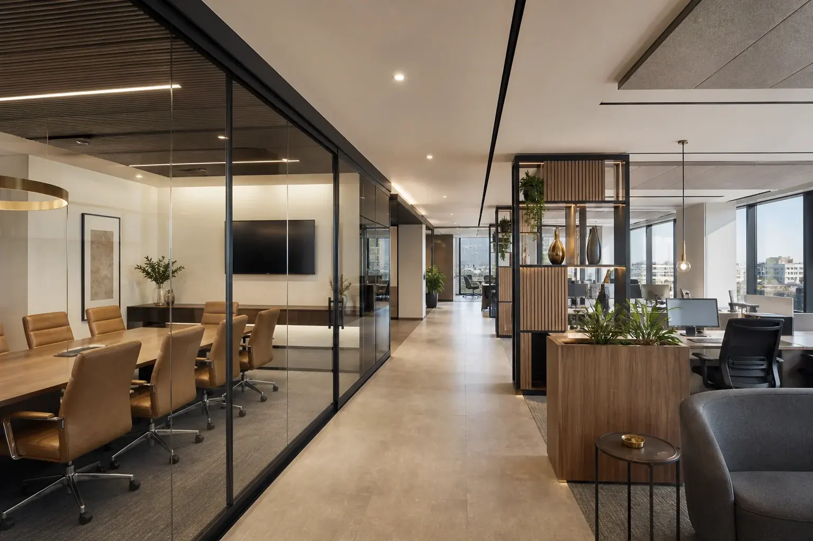

Coordination
Resolve architectural, MEP, joinery and furniture interfaces before installation.
Detail, coordinated
A successful fit-out feels effortless because every hidden interface has been resolved.
We manage specialist trades, services, finishes and client-supplied items with close attention to quality and sequence. The space is delivered ready for people, operations and opening day.
Discuss your fit-out ↗What we coordinate
Our team protects design intent while managing the realities of procurement, access, testing and finishing.
Resolve architectural, MEP, joinery and furniture interfaces before installation.
Procure and manage ceilings, partitions, finishes, lighting, data and bespoke elements.
Samples, benchmarks, inspections and snagging focused on visible finish and performance.
Testing, commissioning, cleaning, documentation and an orderly operational handover.
Made for the user
We understand that every day between practical completion and occupation matters. Close sequencing protects both the finish and the opening date.

Planning an interior?